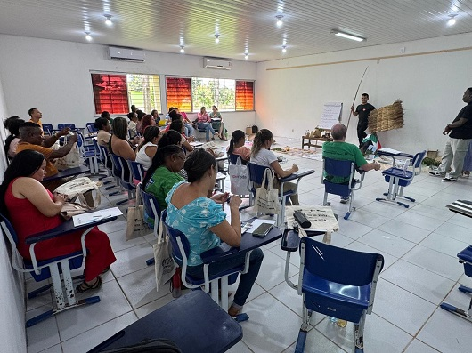

Projeto promove olhar para a saúde no campo, floresta e águas no Maranhão
Com a finalidade de promover a formação de trabalhadores que lidam com o cuidado em saúde de populações nesses territórios, projeto 'Começo Meio e Começo' vem atuando em 33 polos educacionais em oito estados brasileiros